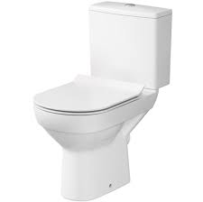

Što je WC?
WC (voda i kanalizacija) je prostorija koja se koristi za obavljanje sranja. Obično sadrži toalet, umivaonik i ponekad i tuš ili kadu.
Tipovi WC-a
- Uređaji sa sjedalom
- Stojeći toaleti
- Kompostirajući toaleti
Povijest WC-a
Prvi poznati toaleti datiraju iz drevnog Egipta i Mesoamerike. Moderni WC izumljen je u 19. stoljeću, a od tada su se razvijali razni modeli i sustavi.
